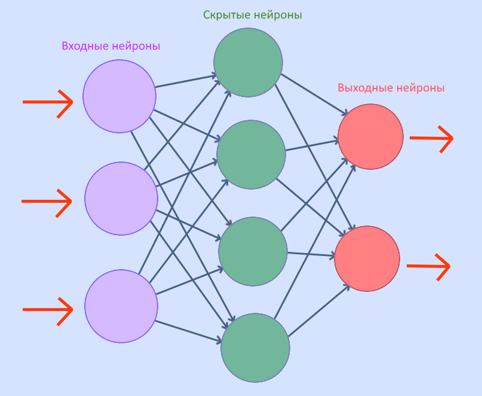

Нам предстоит познакомиться со строением нейронной сети. Но для начала изучим термины:
Нейронная сеть - это последовательность нейронов, связанных между собой синапсами. Она моделирует строение человеческого мозга.
Нейронные сети используются для классификации, предсказаний и распознавания.
Нейрон - это базовая единица нейросети. Он получает информацию, преобразует ее и передает дальше.
Синапс - это связь между двумя нейронами. Синапсы имеют числовой параметр - вес, в зависимости от значения которого изменяется информация.
Нейрон получает значение, равное сумме всех входных данных, умноженных на их веса. Затем к этому значению применяется функция активации - и уже
новое число передается дальше по синапсам.

Теперь о правилах игры
В этой игре будет представлена модель нейросети с одним входным нейроном, несколькими слоями скрытых нейронов и одним выходным нейроном.
Вес каждого синопса равен единице. К данным будет применена следующая активационная функция: их значение будет увеличиваться на 1/10 от случайного числа.
Для удобства эти случайные числа записаны на нейронах.
Мы вводим дополнительные правила и дополнительные возможности для игрока: данные смогут пройти через нейрон только в том случае, если их вес не
превышает занчения случайного числа. Однако, при помощи клика по нейрону игрок сможет изменить значение, написанное на нем, на единицу. Также при
помощи стрелок на клавиатуре игрок сможет изменить направление движения данных. Задача игрока - довести данные до выходного нейрона.